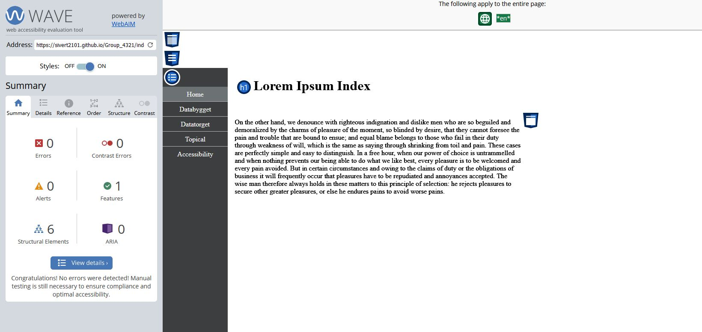

Accessibility
There are a lot of things you must think about when it comes to accessibility. You must make the website available for all people, and you must make it easy for people to use. It is important to make an understandable website that does not confuse people that use it. The website should also be accessible for people with different impairments, and one example of such an impairment is color blindness. It also needs to be a website with few or no errors or alerts that shows something is wrong with the website.
For good accessibility we made a very simple website. There are not any animations or other distractions that can make the website challenging to use. We made a simple navigation menu to have a clean look and make it easy to get a good overview of the website. The navigation menu is also responsive meaning that it will adapt to changes in screen size. This makes it possible to use it on a phone as well as on a computer. The navigation menu contrasts well against the background, and it is easy to differentiate between the different buttons due to a contrasting line between the buttons.
Color blindness is a problem for a lot of people and is something you must think about when you are making a website. We have therefore decided to have a lot of contrast on our website. We have a grey navigation menu with white text, and a white background with black text. This will make our website good for all people with different kinds of color blindness. We also tested the colors on the website on a website called Wave.
To see if our website worked as intended, we used the website called Wave, that we also used to check for colors. The website showed us that our website was accessible enough for their standards. It was zero alerts and zero warnings on the website and that was a good sign for the website. We also tried to make the “code” of the site as structured as possible. We made a lot of comments to make it easier for developers to develop the website site and add new things to the website. This is something important to do when you make programs, and it will also make it easier for the people you are collaborating with to understand what you are doing.